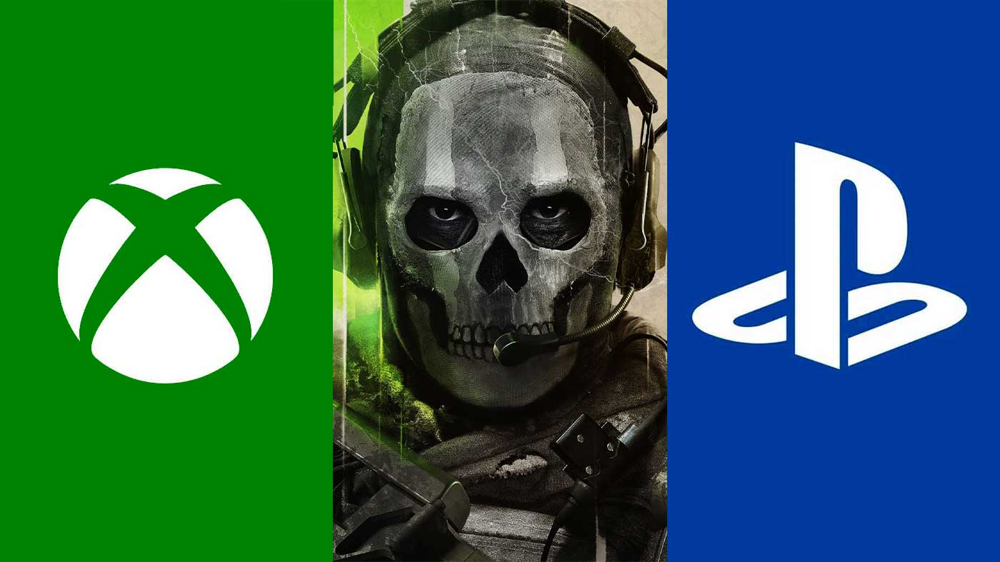

Microsoft: Sony miente ante reguladores europeos para tirar la compra de Activision
Reportes recientes aseguran que Jim Ryan se reunió con autoridades comerciales de la Unión Europea
La oposición de Sony a la compra de Activision Blizzard por parte de Microsoft sigue dando de qué hablar y a estas alturas se trata de un gran escándalo en la industria de los videojuegos. Mientras en Estados Unidos la situación se torno complicada luego de que la Comisión Federal de Comercio (FTC) hiciera oficial que buscará bloquear la adquisición, en Europa la moneda sigue en el aire pero la compañía japonesa estaría tratando de que caiga en la cara que le agrada y Microsoft hizo pública información delicada.
Directivo de Microsoft revela que Sony esta mintiendo ante reguladores europeos
Ayer, la agencia Reuters informó que Jim Ryan, presidente de Sony Interactive Entertainment, se reunió con Margrethe Vestager, jefa del organismo de competencia de la Unión Europea para tratar el tema de la compra de Activision Blizzard por parte de Microsoft. Pues bien, hace unos momentos Frank Shaw, jefe de comunicaciones de Microsoft, tomó su cuenta de Twitter para exponer que Sony está mintiendo ante los reguladores europeos para tirar la compra de Activision. En ese sentido, la primera publicación señala: "escuché que Sony está informando a la gente en Bruselas y afirma que Microsoft no está dispuesto a ofrecerles paridad en cuanto a Call of Duty si adquirimos Activision

Posteriormente, el directivo de Microsoft recordó que la compañía mantiene en pie la oferta que hizo a Sony (y otras compañías) para garantizar la aparición de Call of Duty en sus respectivas plataformas durante los próximos 10 años, periodo que iniciaría en cuanto se apruebe el acuerdo. Luego señaló que la empresa de Xbox está en toda la disposición para llegar a arreglos y compromisos ante las autoridades.
Finalmente, Frank Shaw retomó la idea del sinsentido que representa la idea de sacar a Call of Duty de PlayStation pues se trata del líder en mercado de consolas y retirarlo de ahí sería perjudicial financieramente. Por último, aseguró que el objetivo de Microsoft es llevar la franquicia, y muchos más juegos, a más jugadores para que los disfruten cuando quieran y como quieran.